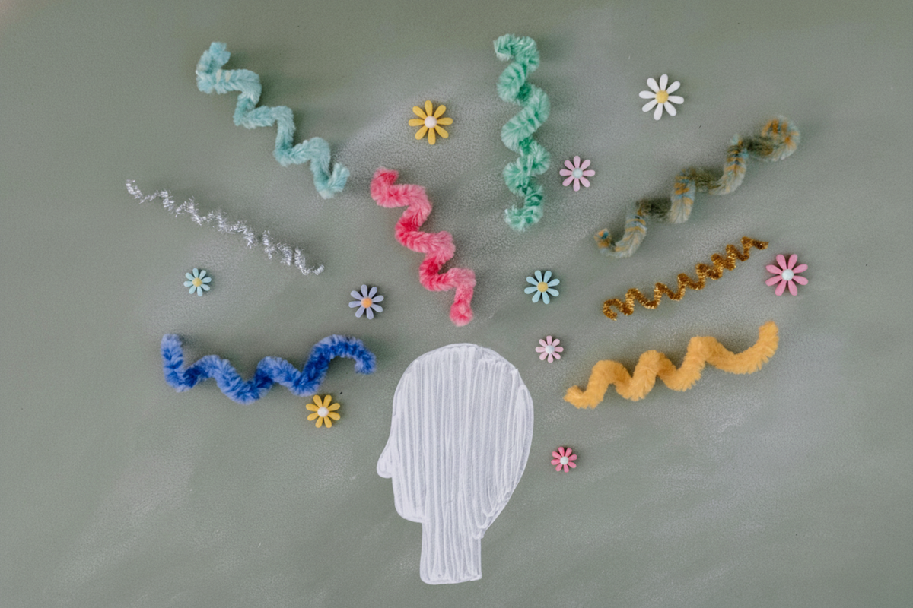

Neurodiversity
Reaching out is a meaningful first step. Support can help you feel more understood, empowered, and aligned with how your brain works best.If you or someone you care about identifies as neurodivergent — or is wondering whether this might apply — please know: you are not alone. With the right understanding and support, it's possible to build on strengths, reduce overwhelm, and create environments that foster success and well-being. Our clinicians provide neurodiversity-affirming, evidence-based care grounded in compassion, collaboration, and respect.
If you've been feeling overwhelmed, misunderstood, chronically exhausted, or “out of sync” with expectations around you, your experiences are valid. Many neurodivergent individuals grow up adapting to environments that were not designed with their needs in mind. Over time, this can impact self-esteem, mood, and overall quality of life. Support is available to help you better understand your experiences and move forward with clarity and confidence.
The good news is that with the right strategies and accommodations, meaningful and sustainable change is possible.
What is neurodiversity?
Neurodiversity reflects the natural variation in how people think, learn, and experience the world — and with that variation comes meaningful strengths. Neurodivergent individuals often bring creativity, innovation, and original problem-solving approaches that challenge conventional thinking and spark new ideas.
Many demonstrate strong pattern recognition, attention to detail, deep focus in areas of interest, and the ability to think systemically or analytically. Others may excel in big-picture thinking, rapid idea generation, adaptability, or high levels of energy and drive. Persistence, resilience, authenticity, and a strong sense of justice are also commonly reported strengths.
Neurodiverse teams and communities benefit from cognitive diversity — different ways of processing information, approaching challenges, and communicating. In supportive and inclusive environments, neurodivergent individuals are able to build on their strengths and make creative, meaningful, and impactful contributions.
It is important to note that neurodiversity is not a diagnosis itself, but a framework that recognizes cognitive differences as part of normal human diversity. Whether formally diagnosed or self-identified, individuals across the neurodiversity spectrum deserve understanding, accommodation, and supportive care.
The following are some of the differences commonly understood to fall within the neurodiversity spectrum and their associated strengths.
Autism Spectrum
A neurodevelopmental difference characterized by variations in social communication, sensory processing, focused interests, and patterns of behavior.
Strengths- Autistic individuals often possess unique strengths that reflect differences in perception, thinking, and processing. Many demonstrate deep focus, sustained attention to areas of interest, and a strong ability to develop expertise in specialized topics. This capacity for concentration can support high levels of skill, creativity, and innovation.
- Autistic individuals may also excel in pattern recognition, logical reasoning, detail orientation, and systematic thinking. They often value honesty, authenticity, and fairness, and may communicate in a direct and clear manner. Strong memory, consistency, reliability, and dedication to tasks are also commonly reported strengths.
- Many autistic people bring original perspectives, deep empathy (even if expressed differently), and a thoughtful, reflective approach to relationships and problem-solving. When supported in environments that respect sensory and communication needs, autistic individuals can thrive and make meaningful contributions across many areas of life.
Attention-Deficit/Hyperactivity Disorder (ADHD)
Differences in attention regulation, impulse control, and activity levels. Individuals may experience distractibility, restlessness, or difficulty with organization, alongside strengths such as creativity and high energy.
Strengths- While ADHD can present challenges with attention, organization, and impulse control, it is also associated with many valuable strengths. Individuals with ADHD are often highly creative, innovative thinkers who generate original ideas and see connections others may miss. They may demonstrate strong problem-solving abilities, adaptability, and the capacity to think quickly under pressure.
- Many people with ADHD bring high energy, enthusiasm, and spontaneity to their work and relationships. When engaged in areas of genuine interest, they can experience deep focus (often called hyperfocus), allowing for exceptional productivity and passion-driven achievement. Resilience, curiosity, empathy, and a willingness to take initiative are also common strengths.
- With the right supports and environments that align with how their brain works best, individuals with ADHD can thrive and leverage these strengths in meaningful and impactful ways.
Specific Learning Disorders (e.g., dyslexia, dyscalculia, dysgraphia)
Neurologically-based differences that affect specific academic skills. Dyslexia impacts reading, dyscalculia affects math skills, and dysgraphia involves writing difficulties, despite average or above-average intelligence.
Strengths- Individuals with learning disabilities often develop strong problem-solving skills, perseverance, and creative thinking as they learn to navigate academic challenges. Many people with dyslexia demonstrate strengths in big-picture thinking, storytelling, spatial reasoning, and innovation. Those with dyscalculia may excel in conceptual or verbal reasoning, while individuals with dysgraphia often show strong verbal communication, imagination, and visual or hands-on learning abilities. Adaptability and resilience are common strengths across learning profiles.
Dyspraxia (Developmental Coordination Differences)
Differences in motor coordination and planning. Individuals may have difficulty with balance, fine motor tasks, or organizing physical movements.
Strengths- People with dyspraxia frequently develop strong determination, persistence, and creative problem-solving skills. Many become highly empathetic and attuned to others' experiences, particularly around challenge and effort. Strengths can include verbal reasoning, strategic thinking, creativity, and the ability to approach tasks thoughtfully and deliberately. Over time, individuals often cultivate strong self-awareness and resourcefulness.
Tourette and Tic
Neurological difference characterized by involuntary motor and/or vocal tics. Tics can vary in frequency and intensity and often fluctuate over time.
Strengths- Individuals with Tourette Syndrome or tic disorders often demonstrate resilience, adaptability, and emotional strength in navigating fluctuating symptoms. Many report heightened creativity, humor, quick thinking, and strong observational skills. Persistence, authenticity, and the ability to manage challenges with determination are also common strengths. With understanding and support, individuals can channel their energy and unique perspectives into meaningful personal and professional contributions.
Intellectual and Developmental Differences
Differences in intellectual functioning and adaptive skills, such as communication, social skills, or daily living tasks, beginning during the developmental period.
Strengths- Individuals with intellectual and developmental disabilities often demonstrate strong authenticity, loyalty, and emotional warmth in relationships. Many show persistence, dedication, and pride in mastering practical or hands-on skills. Creativity, enthusiasm, honesty, and a strong sense of routine and responsibility are also common strengths. With supportive environments, individuals can thrive through meaningful participation, connection, and contribution within their communities.
Sensory Processing Differences
Variations in how the nervous system interprets sensory input (e.g., sound, light, touch). Individuals may be highly sensitive (over-responsive) or under-responsive to sensory stimuli.
Strengths- People with sensory processing differences often have heightened awareness of their environments and may notice subtle details others miss. This sensitivity can support strengths in creativity, artistry, pattern recognition, empathy, and attunement to atmosphere or mood. Those who are sensory-seeking may bring energy, curiosity, and a strong desire for exploration and movement.
Auditory Processing Differences (APD)
The brain has difficulty interpreting and making sense of sounds, particularly speech, despite normal hearing ability.
Strengths- Individuals with APD frequently develop strong visual learning skills, problem-solving abilities, and attention to non-auditory details. Many excel when information is presented visually or experientially and may show strengths in observation, hands-on learning, creativity, and strategic thinking. Adaptability and persistence are also common.
Nonverbal Learning Differences (NVLD)
A profile characterized by strengths in verbal skills alongside challenges with visual-spatial processing, motor coordination, and interpreting nonverbal social cues.
Strengths- Individuals with NVLD often have well-developed verbal skills, strong vocabulary, and an ability to express themselves clearly. Many demonstrate strengths in reading, memorization, analytical thinking, and structured, rule-based tasks. Attention to detail and dedication to accuracy are also frequently observed.
Social Communication Differences
Challenges in understanding and using verbal and nonverbal communication in social contexts, such as reading body language, tone of voice, or conversational flow.
Strengths- People with social communication differences may bring honesty, directness, and clarity to interactions. Many value fairness, loyalty, and meaningful connections. They often excel in structured communication, deep conversations about shared interests, and thoughtful, reflective problem-solving. With supportive environments that respect communication styles, these strengths can flourish.
Theraputic Process
Sessions 1-2
We begin by understanding your unique experiences — your strengths, challenges, sensory preferences, attention patterns, and the environments that shape your daily life.
Sessions 3-4
From there, we collaboratively develop a plan focused on practical supports, emotional well-being, and self-understanding, while building resilience and self-advocacy skills.
Sessions 5+
Subsequent sessions are scheduled at a frequency that aligns with your needs and goals.

We also recognize the importance of lifestyle supports, accommodations, and strong social connections. When appropriate, we may collaborate with schools, workplaces, or medical providers to ensure comprehensive care.
Please know that neurodivergent experiences are important — whether or not you have a formal diagnosis. You deserve understanding, practical tools, and supportive care.
If you're ready to take the next step, we're here to walk alongside you.
Please note, at this time we offer direct billing to Blue Cross and Canada Life.
What is Evidence-Based Practice?
Evidence-Based Practice is our commitment to providing care that is grounded in science, guided by clinical expertise, and tailored to you. This approach integrates the best available research with the knowledge and experience of your clinician, while also considering your unique strengths, culture, values, and personal preferences.
Evidence-based practice is more than using specific techniques. It is a thoughtful, collaborative decision- making process. Together, we review what research suggests is effective, apply professional judgment and experience, and adapt treatment to fit your individual needs. This approach extends beyond therapy methods to include assessment, case formulation, and the therapeutic relationship itself.
We also believe in ongoing monitoring and open communication. Your progress is regularly reviewed, and your treatment plan is adjusted as needed to ensure you are receiving the most effective, meaningful, and responsive care possible.
Our clinicians use a neuro-affirming approach to the following evidence-based models of care.